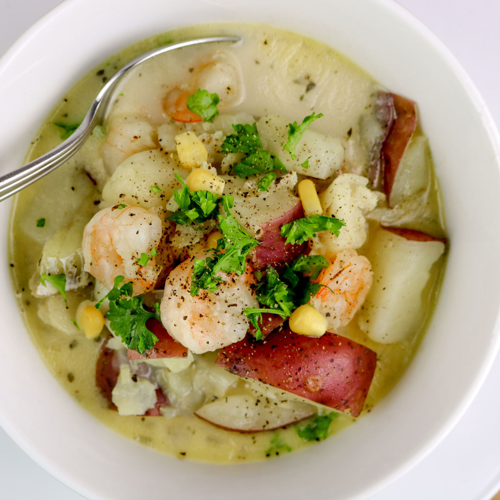
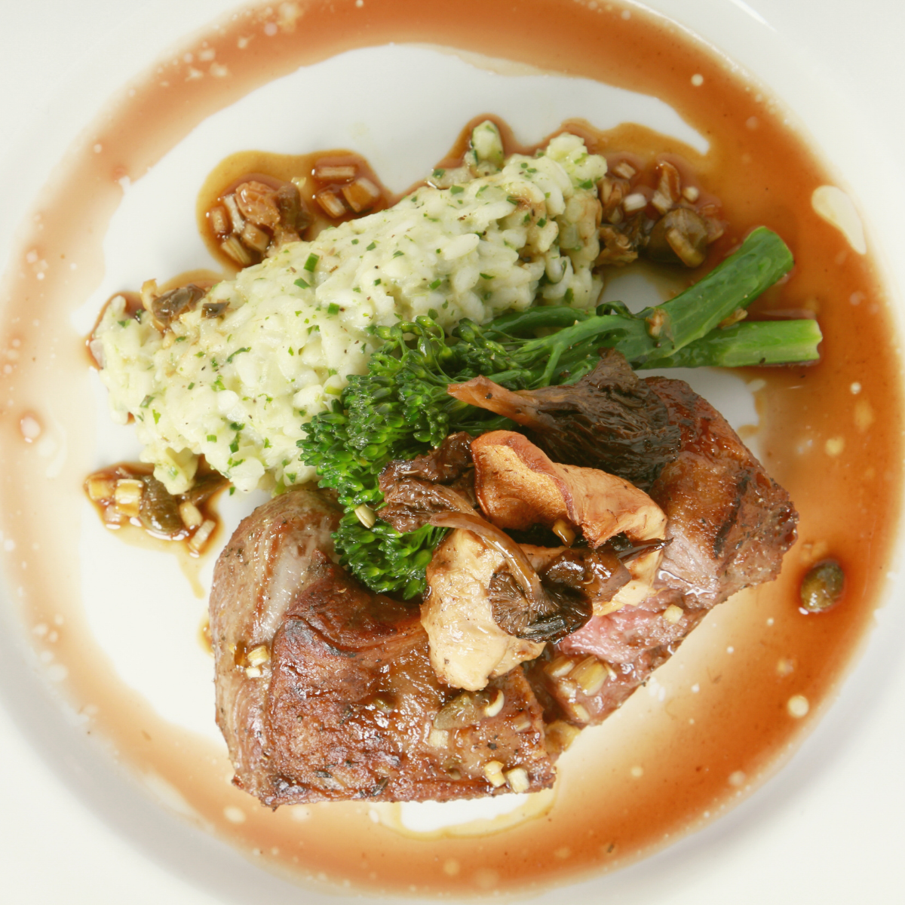
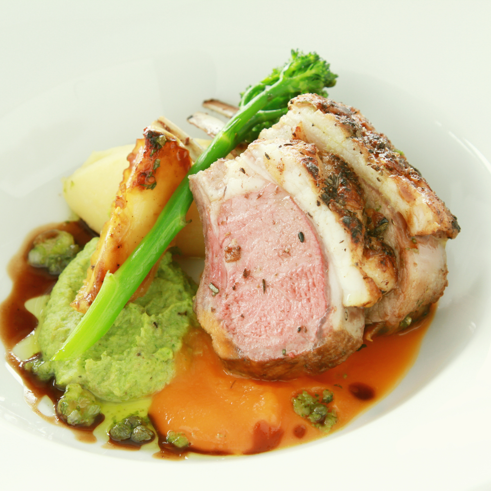
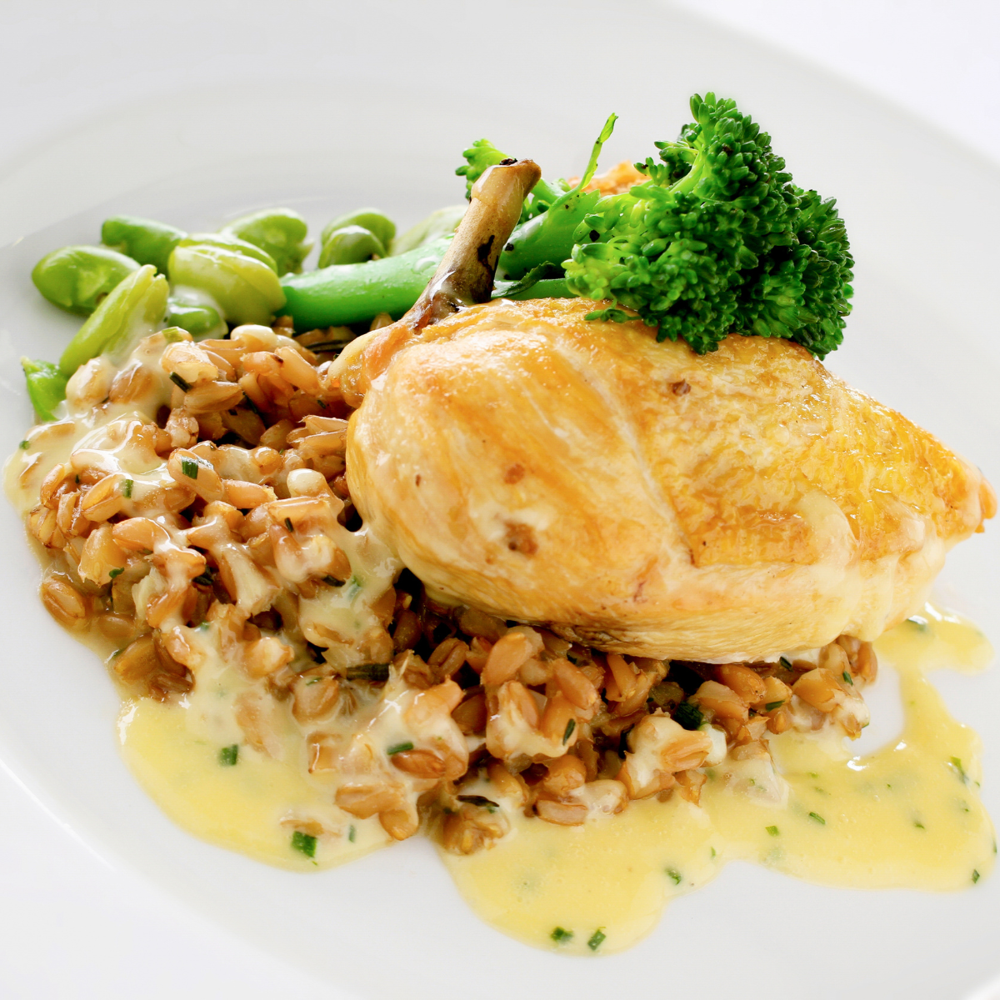

Main
- FISH OF THE DAY
- Beer battered fish and kumara fries, served with a side salad and homemade tartare.
- MUSSELS AND SCALLOPS
- Steamed mussel & scallop mousse, honey and soy broth.
- SEAFOOD CHOWDER
- Creamy chowder filled with terakihi, prawn, hoki, scallops and mussels, served with flatbread.
- PORK BELLY
- Slow cooked pork belly served on a bed of apple slaw with roasted kumara, and crispy noodle.
- LAMB STEAK
- New Zealand Lamb coated in a kawakawa crumb, served with Dijon mustard glazed carrots, roasted butternut squash and a mushroom Jus.
- VENISON
- Venison crusted with horopito, served with glazed plums, cabbage salad and red wine Jus.
25
25
30
30
33
33
Dessert
- KĀPITI ICE CREAM
- Check for daily specials.
- STEAM PUDDING
- Golden syrup flavoured steam pudding, served with vanilla ice cream.
- MINI PAVLOVA
- Mini Pavlova served with kawakawa and lemon infused cream and fresh fruit.
- BANOFFEE PIE
- Toffee, fresh bananas and fresh cream.